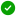
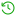
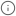

Authorize YouTube Channel
Connect your club’s YouTube channel to enable automatic saving and publishing for your streams.
YouTube connected successfully
Your YouTube channel is verified and ready to receive stream recordings automatically.
Status

VerifiedAutosaveEnabled

Last SyncTodayConnected Channel: JVW Straming

New broadcast can be saved to Youtuber automatically after streamingSample connection state from Figma. No account is connected in this local preview.